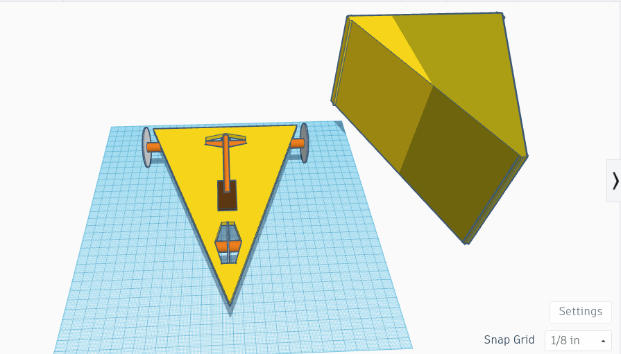
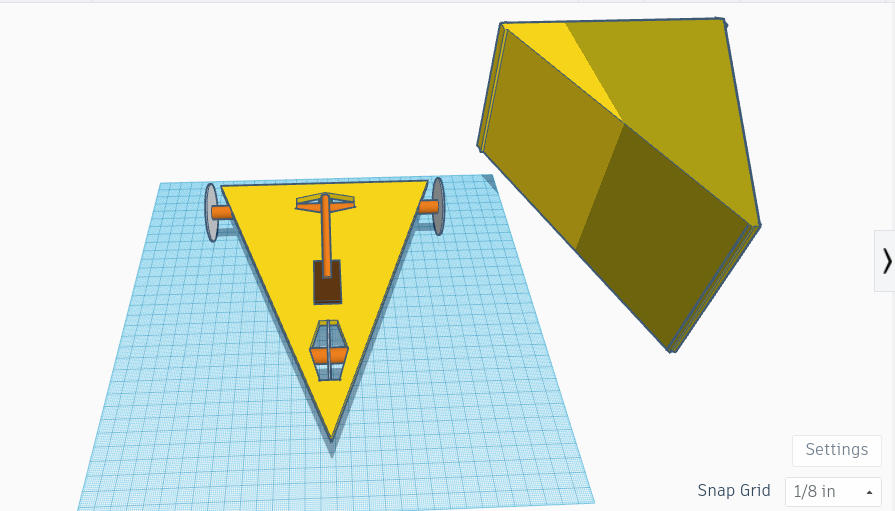

Today we started doing our website and did a fun experiment. We had to engineer a way to make a marble go into a bucket with pipes. Our team got first place! We also went over safety and the Engineering Process. Safety included wearing the proper items like safety goggles and aprons and also included common sense stuff, such as not playing with knives. The Engineering Process is very similar to the Scientific Method; identifying a problem, making a solution, and improving that solution. That's all for today!
Up to this day, our class has been very busy. Lately we have gone over Rube Goldberg machines. We first started with CADing our machines. My group is planning on making a pulley to set off another ball that sets off a car that pops a balloon. After that, we started cutting out cardboard so we could make or machine. We had to make pillars to support the ramps, so we made those out of cardboard and then stuck them into the base with sharpened skewers. We had some extra cardboard so I made a greatsword! Today we also took a Mechanical Engineering quiz. I had some trouble answering some questions but hope I get a good grade! Mechanical engineering involves the design, construction, operation, and maintenance of machines and mechanical systems. I learned a fun fact: the wheel was one of the first mechanical inventions! That's all for today!
Today and this week we finished making our Rube Goldberg Machines. Our design was relatively simple: we would start with a ramp, make a pulley, and then roll a ball down that set off a mechanism that popped the balloon. However, we encountered many problems on our second day of design. First, we had to make the pulley mechanism, which proved harder than it seemed. We had to make a base for the pulley so that it would work properly. Then we made two boxes for the baseball to go into until we realized that the baseball wouldn't fit in the box. We pivoted and instead went with multiple marbles rolling down the ramp at the same time. We eventually got the pulley mechanism to work and then we had to find a solution on how we would make a second ball roll down a ramp to pop the balloon. We ended up putting a marble on a flat surface and when the pulley went down, it would set the marble off. It didn't really work until one of my teammates made a small wedge (a small cardboard piece with a ton of tape around it) and put it behind the marble, which somehow made everything work. After that we added a ramp and a turning mechanism so when the marble hit the mechanism at high velocities it would turn the mechanism and make the balloon pop. This was the final step, and all we hd to do now was record. We finally got it on our ninth try because there were some technical difficulties with the pulley. The video is attached below. After we finished making the machine, we did a small challenge. We had to make measurements of the letter E and then give it to a partner so they could design and cut it out. We completed the challenge with ease and finished the day. That's all for today!
This week we learned about computer engineering. It involves combining computer science and electrical engineering. This week we dissected computers to learn more about their inner parts. We took apart school desktops and followed instructions to carefully take it apart. Along the way, we recognized many parts like the CPU, heat sink, disk drive, RAM, hard drive, audio, and the battery. After we took it apart, we took pictures of it (below) and put it back together following the steps we were given on the slides. Today we colored in a picture of a desktop (it looked like a QR code) and labeled the parts with colors. We had some difficutly because of the quality of the picture but we got it done. That's all for today!


This week we learned about bioengineering. It is the application of principals of biology and the tools of engineering to create usable, tangible, economically-viable products. After that, we made hands out of cardboard that had to be able to pick up empty water bottles. I brainstormed the design while my partner made the actual hand. It worked surpisngly well and we didn't really encounter any problems. Any problems we had were related to the srings we used to curl the fingers, but we used rubber bands to tighten them and everything worked smoothly. Today we filled a worksheet out with details on computer engineering. That's all today!
This week we learned about aerospace engineering. First, we took notes about aerospace engineering and the uses for it. It is a branch of engineering that involves design, manufacturing, and science of aircraft and spacecraft. This is a field I am interested in because I want to work at JPL when I grow up. The next class, we CADed our bottle rockets, so we could launch them! A picture of the CAD is below. AFter that, we made the physical rocket with a 2-liter bottle and attached cardboard to it to make it more "aerodynamic." Unfortunately, when we actually shot the rocket, they didn't go very far and twisted in the air a lot. A slow-mo video of this is attached below. I think it's mostly because our rocket was irregularly shaped and our cardboard was unevenly distributed. Anyways, that's all for today!
This week we learned about environmental engineering. First, we went over slides and took notes about enviornmental engineering and the many features of it. It consists of the integration of science and engineering principles to improve the natrual environment to provide healthy water, air, and land for human habitation and for other organisms, and to remediate pollution sites. Our activity for the unit was to create a water filter that could filter nasty water into somewhat clear water (picture below). First, we got a bottle and put cotton balls, sand, and then some rocks, with the cotton balls at the bottom and the rocks at the top. We got a scooper and we dumped the dirty water into our bottle, with a cup on the bottom that collected the filtered water. We noticed that the cotton balls got dirtier over time as water passed through. We ended up with somewhat clear water, but after trying to keep filtering the water, it just got dirtier, so we stopped. The cotton balls were probably dirty, which is what made it fail. Images are below. That's all for today!
This week we learned about electrical engineering, probably one of the most difficult subsections of engineering. It's also one of the most important, as technology usage is growing exponentially. First, we went over the slidese for electrical engineering. It is the field of engineering concerned with the study, designing, and use of appliances and equipment which use any form of electricty. Our first activity for the unit was to CAD some breadboards and circuits on TinkerCAD. Honestly, it was pretty boring and difficult, me and my friends ahd to ask Mr. Kim for help since it was so hard. We had to connect a battery to and LED and light it up but change the current, voltage, and resistance so that it was at a certain number. Then we took pictures and uploaded it to an assignment on google classroom (pictures below). That's all for today!
This week we continued our unit on electrical engineering, which is progressively becoming more difficult and frustrating. This week we had to take the TinkerCads of our breadboards and actually make them using real wires. First, we connected a "computer" to our Chromebooks so that we could have power to our breadboard circuit. Then we had to copy what we did on the TinkerCad and connect wires and stuff to our breadboards to light up and LED. Then we also had to fill out a worksheet to find the voltage of the power of the circuit and had to use a multimeter to check that. It was honestly so confusing and definetly one of the hardest things we've done in class (pictures below). Side note: we stuck an LED into an eraser and drew a face around it and named it Rudolph the Red-nosed eraser. Anyways, the next class we basically did the same thing except we programmed the computer we attached to the Chromebook so that the LEDs blinked in a certain order. This was slightly easier than the previous challenge due to the fact that we had already done the circuit, we just had to code it, which was really easy (videos below). That's all for today!
Okay so I'm not sure what week this is since the internet went down and we got hacked, but I'm supposed to write about Business Engineering, probably my favorite unit we've done so far. It is a hybrid between a business administration and technology expert so that the business can give the best experience to their user. Its kinda sneaky because you have to manipulate your customers to think postiively about your product. Our project for this unit was to make a business pitch about any item we want. Me and my accomplice created The Blue Shell, a heat-seeking smoke bomb that smoeks the competition! We pitched our idea to everybody and we didn't get funding because the idea was ahead of its time. I couldn't get why people wouldn't take the risk for a possibly fatal toy! Anyways, we basically had no problems and our slides presentation was beautifully made. We made it very funny to draw our customers in and it was definitely serious. That's all for this unit!
Hi, I'm here again to talk about Civil Engineering, another fun unit. For this entry I have to answer some boring questions, so here we go:
This week we went over our Chemical Engineering unit, which is the branch of engineering that deals with the chemical production and the manufacturing of products through chemical processes. For the project for this unit we made oobleck (that's fun to say). Its a non-Newtonian object that is both a liquid and a solid but neither a liquid or solid at the same time. It consists of corn starch and water only, suprisingly. However, ours was poorly made and it was similar to milk. The video is from a friend who did it correctly. When you apply pressure to ooooooblekkkkk, it turns into a solid, but less pressure it will be a liquid. That's all for chemical engineering!
This time we started our first biggggg project. We have to make a car powered only by a mousetrap, which has to go as far as possible. My teammates were Nathaniel and the absolute goat, a transfer kid from another class, NOAH NAM. This week we focused on the project outline and then made the CAD for it (and by we, I mean mostly Noah made the CAD while me and Nathaniel did the outline. Our design is a triangle shaped car with a cover, and we're calling it the Cheddar Chariot (it's trademarked so don't copy it). We call it this since we're going to decorate it so it looks like a piece of cheese. That's all for today!
 
This week we continued our Cheddar Chariot construction. Our first iteration worked incredibly well and definitely lived up to its name. It travles 16 feet, just a little more than our calculations, so we're super happy about that. Next week we plan on making a cover for the car so that it looks like a block of cheese. Our first iteration isn't meant to go far and its mostly purely cosmetic, and we plan on making a second iteration called the Provolone Prowler that's projected to go 40 ft. Our front wheel on the Cheddar Chariot is made up of two wheels that are somewhat separated enough so that the mousetrap stick can go inbetween them which is pretty cool. Most likely me and my groupmates will be working on different parts of the project, me working on the cover for the Cheddar Chariot and Noah and Nathaniel working on the Provolone Prowler. That's all for today!
This week we worked on both the Cheddar Chariot and the Provolone Prowler. I worked on the cover for the Cheddar Chariot by taping and gluing pieces of cardboard together and attaching them by putting sticks through multiple to make them stick. Then I colored the entire thing with yellow color pencil and decorated the outside with a black marker, which was probably my favorite part of construction. While I was doing this, Noah and Nathaniel cut a huge piece of cardboard out to make the Provolone Prowler. Our rod was extremely long so that we could go farther and we attached six wheels because why not. It was extremely succesful and went around 45 feet even though it was projected to go around 40 ft. Our Cheddar Chariot, however, only went 10 ft but I'm pretty sure it would've gone farther if we hadn't put the cover on it. Anyways, that's all for today!
This week we worked on a variety of things, starting with a debate on Doors vs. Wheels. We had to choose whether to back the fact that there were more doors in CV or more wheels in CV and then make a valid argument for why this was true. Me and my group decided to back doors since we had two ideas to back the opinion: 1. being that there are about quintillion doors at CV if you count the student's mitochondira or something, and that each door was a "doorway to knowledge" which made each door count for two. Doors ended up winning because a group that had an actual argument and calculations but me and my groups argument got invalidated because of its complexity. Secondly, we started an eggdrop project, where we have to make a device that makes an egg drop without it cracking. Our design consists of a ton of straws, inspired by Mark Rober and his design. Then we had to CAD the thing and that was horrible, but its below. That's all for today!